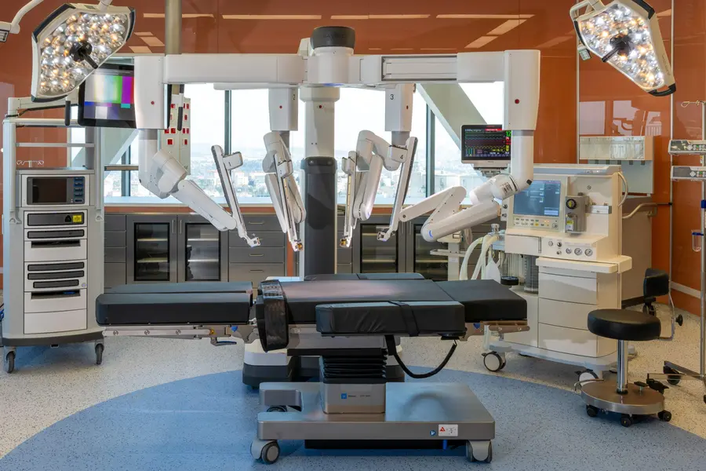
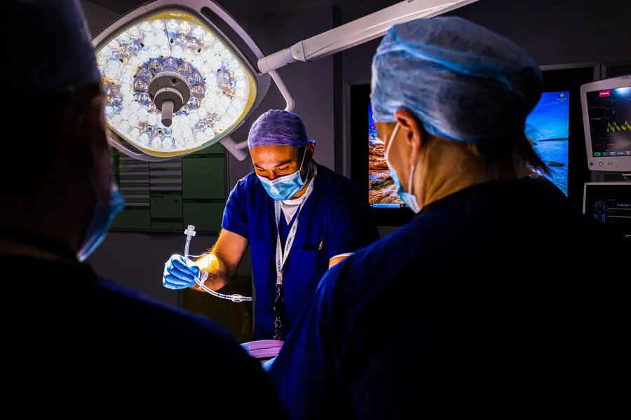
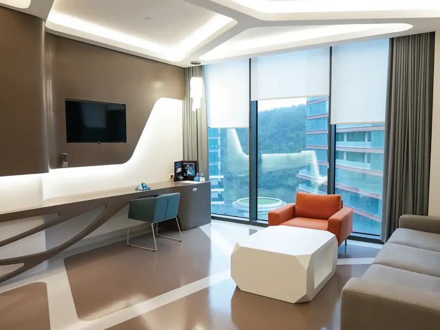
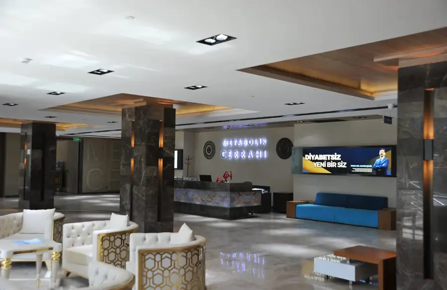

OFERTĂ LIMITATĂ · Valabilă până la 31.12.2026 · Se calculează zilele rămaseGASTRIC SLEEVE · 2.000€ ALL-INCLUSIVE · Rezervă evaluarea
OFERTĂ LIMITATĂ · Valabilă până la 31.12.2026 · Se calculează zilele rămaseGASTRIC SLEEVE · 2.000€ ALL-INCLUSIVE · Rezervă evaluarea
Bună ziua! Am 112 kg și vreau gastric sleeve 🙏
Medicross · Consultant
Cu oferta actuală, pachetul complet e 2.000€ ✅ Trimite-ți analizele și îți dau planul complet în 24h.
M
0:32
Prof. Dr. Halil Alış & Op. Dr. Akın Ünal
Chirurgie bariatrică · Istanbul · Ofertă până la 31.12.2026
Gastric Sleeveîn Turcia
Micșorarea stomacului · Pachet all-inclusive
2.000€ ALL-INCLUSIVE — doar pentru programări confirmate până la 31 decembrie 2026.
2.000€ALL INCLUSIVE · pachet complet
3–4 zileședere în Istanbul
Intervenție
Analize
Hotel
Transferuri
Translator român
Oferta Gastric Sleeve de 2.000€ este disponibilă doar până la finalul anului 2026. Pachetul all-inclusive reunește intervenția, analizele, hotelul, transferurile și translatorul român într-o singură călătorie în Turcia. Solicită evaluarea gratuită pentru a afla dacă ești eligibil și pentru a discuta cu echipa medicală pașii următori.
Ofertă pentru programări confirmate până la 31.12.2026. Eligibilitatea și prețul final se confirmă după evaluarea medicală.
Intervenția de gastric sleeve, realizată de chirurgii tăi
Spitalizarea și toate analizele pre-operatorii
Cazarea la hotel pe durata șederii în Istanbul
Transferurile private aeroport – spital – hotel
Translator român lângă tine la fiecare pas
Consultații online gratuite timp de un an după operație
Eligibilitatea și prețul final se confirmă după evaluarea medicală a analizelor tale.
Despre intervenție
Cum funcționează micșorarea stomacului
Ce este gastric sleeve
Gastrectomia longitudinală este o intervenție laparoscopică, minim invazivă: chirurgul îndepărtează o mare parte din stomac și îi lasă forma unui „tub” (mânecă). Stomacul mai mic înseamnă porții mai mici și senzație de sațietate mai repede.
Sleeve sau bypass?
Gastric sleeve este, în general, intervenția mai simplă. Bypass-ul gastric poate fi recomandat în cazuri mai complexe, de exemplu când există diabet sau alte afecțiuni asociate. Alegerea o faci tu, împreună cu chirurgul, după evaluarea analizelor.
Recuperarea și rezultatele
Stai în Istanbul 3–4 zile, sub supravegherea echipei medicale, iar apoi revii treptat la activitățile tale în 2–3 săptămâni, urmând planul alimentar primit. În medie, pacienții pierd 60–70% din excesul ponderal în primul an — rezultatul diferă de la persoană la persoană.
Pașii tăi
Procedura, explicată în limba română
01
Ne trimiți datele
Completezi formularul sau ne scrii pe WhatsApp: greutatea, înălțimea și eventualele afecțiuni. Durează câteva minute și nu te obligă la nimic.
02
Primești planul tău
În maximum 24 de ore, un consultant Medicross revine cu planul de tratament și cu confirmarea ofertei de 2.000€, după evaluarea medicală.
03
Decizi fără presiune
Alegi data care ți se potrivește. Dacă hotărăști să mergi mai departe, noi organizăm tot restul: de acasă până acasă.
Tot ce trebuie să știi
Răspunsurile de care ai nevoie
Ce include prețul de 2.000€?+
La 2.000€, pachetul tău all-inclusive include intervenția cu Prof. Dr. Halil Alış și Op. Dr. Akın Ünal, spitalizarea, toate analizele pre-operatorii, hotelul, transferurile private și translatorul român care te însoțește la fiecare pas. Tu nu te ocupi de nimic altceva — noi ne ocupăm de restul, până la ultimul detaliu.
Cum aflu dacă mă calific?+
Dacă ai un IMC peste 35, sau peste 30 și te confrunți cu afecțiuni asociate greutății (diabet, hipertensiune, apnee în somn), ești un candidat potrivit pentru această intervenție. Decizia finală îți aparține ție și chirurgului, după ce analizele tale sunt evaluate — fără presiune, fără obligații din partea ta.
Cât durează șederea și recuperarea?+
Rămâi în Istanbul aproximativ 3–4 zile, cât timp echipa medicală te monitorizează îndeaproape. După ce ajungi acasă, revii la activitățile tale obișnuite în 2–3 săptămâni, respectând planul alimentar și indicațiile medicale individuale. Timp de un an după operație, beneficiezi de consultații online gratuite cu medicul operator sau cu medicul și dieteticianul, conform planului de monitorizare stabilit.
Ce rezultate pot obține?+
În medie, pacienții care aleg Gastric Sleeve pierd 60–70% din excesul ponderal în primul an. Rezultatul tău depinde de cât de riguros respecți indicațiile medicale și de stilul de viață pe care îl adopți după intervenție — dar diferența pe care o simți începe încă din prima lună.
Ce monitorizare primesc după operație?+
Consultații online gratuite timp de un an după operație, oferite de medicul operator sau de medic împreună cu dieteticianul, în funcție de planul de urmărire postoperatorie.
Până când este valabilă oferta?+
Oferta de 2.000€ este valabilă doar pentru programările confirmate până la 31 decembrie 2026. Numărul de locuri din calendarul celor doi chirurgi este limitat — cu cât ne scrii mai devreme, cu atât ai mai multe opțiuni de dată pentru călătoria ta.
Pot rămâne însărcinată după operație?+
De regulă se recomandă să aștepți aproximativ un an după operație, ca greutatea și aportul de nutrienți să fie stabile. Medicul îți dă recomandări personalizate la evaluare.
Unde are loc operația?+
La un spital partener acreditat JCI din Istanbul. Hotelul, transferurile private și translatorul român sunt incluse în pachet, iar noi organizăm tot ce ține de călătoria ta.
Fără costuri, fără obligații
Primești opinia medicală gratuită
Descoperă opțiunile de tratament personalizate și beneficiile pachetului ALL INCLUSIVE. Completează formularul și consultantul nostru pentru pacienți te va contacta în cel mai scurt timp.
De ce Medicross
Ce primești alături de noi
Pachet all-inclusive
O singură sumă pentru intervenție, spitalizare, analize, hotel, transferuri și translator.
Chirurgi numiți
Știi de la început cine te operează: Prof. Dr. Halil Alış și Op. Dr. Akın Ünal.
Consultant dedicat
Vorbești în română, direct pe WhatsApp, cu răspuns în maximum 24 de ore.
Translator român
Te însoțește pe toată durata șederii în Turcia, la consultații și în spital.
Monitorizare după operație
Consultații online gratuite timp de un an, cu medicul operator sau cu medicul și dieteticianul.
Unde te operezi
Spitale de top, standarde verificabile
Operația are loc într-un spital partener acreditat JCI din Istanbul, cu standarde internaționale de siguranță și calitate.




După operație
Nu rămâi niciodată singur după operație
Cea mai mare teamă a unui pacient este: „dacă apare o problemă, sunt singur într-o țară străină?” Răspunsul nostru este că rămâi în legătură cu echipa, înainte, în timpul și după tratament.
Nu promitem rezultate medicale — acestea depind de fiecare pacient. Ne angajăm la coordonare și comunicare.
Asistență 24/7 din partea echipei Medicross, inclusiv după întoarcerea acasă
Consultații online gratuite timp de un an cu medicul operator sau cu medicul și dieteticianul
Un singur punct de contact, în limba română, pe WhatsApp
Plan alimentar și indicații postoperatorii adaptate ție
Rezultate reale
Ce spun pacienții noștri
ÎnainteDupă
Florin
„Am renăscut la 40 de ani! Am stat 20 de ani la 130 kg în loc să fiu ca acum, la 79 kg. Operația nu a fost doar benefică, ci cel mai bun lucru din viața mea.”
ÎnainteDupă
Daniela
„Am luat cea mai bună decizie! Prietenii și familia mea spun că am luat cea mai bună decizie. Aș recomanda operația unui prieten — rezultate extraordinare, servicii foarte bune.”
ÎnainteDupă
Alina
„Înainte de operație aveam 98 kg. În 8 luni am ajuns la 60 kg. Pe lângă îmbunătățirile fizice, mi-a adus și mai multă încredere în mine. M-a făcut să mă iubesc mai mult!”
★★★★★
„Recomand cu toată încrederea atât spitalul, cât și personalul, hotelul, traducătorii. Sunt operată de 3 luni și am slăbit 28 kg. Mulțumesc!”
RBRoxy BonytaGastric Sleeve
★★★★★
„Totul a fost exact ca în contract! Deși am fost spitalizată mai multe zile, nu am plătit nimic suplimentar. Spitalul foarte curat, personalul receptiv, doctorul turc excepțional, suport în România post-operație!”
LALarisa AnastasescuChirurgie
★★★★★
„Totul a fost exact ca în contractul semnat! Hotelul curat și frumos. Spitalul curat, asistenții și doctorii de nota 10. După 3 luni de la operație sunt foarte bine. Mulțumesc, Tratamente Turcia!”
PDPetruța DumitrescuChirurgie
★★★★★
„Sunt mulțumită și de condițiile din spital, și de tratament, și de rezultate. Totul a fost așa cum am discutat înainte de a merge în Turcia — preț, condiții de cazare și tratament. Sunteți de apreciat!”
CNClaudia NicoletaTratament
Experiențele pacienților sunt individuale, iar rezultatele diferă de la o persoană la alta.
Peste câteva luni, te poți privi în oglindă altfel
Nu e vorba doar despre kilograme — e despre cum te simți dimineața, despre energia pe care o ai, despre încrederea pe care ți-o recapeți. Scrie-ne acum pe WhatsApp și hai să stabilim împreună primul tău pas.
Disponibil non-stop · fără costuri, fără obligații
Medicross nu prestează servicii medicale — rolul nostru este de intermediere și organizare a călătoriei medicale. Responsabilitatea medicală aparține unității medicale din Turcia. Prețul afișat este valabil pentru programări confirmate până la 31.12.2026 și poate necesita confirmare finală după evaluarea analizelor medicale.